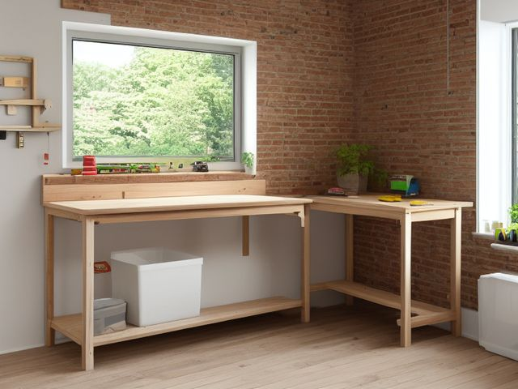

Garage micro zone
The Primary Workbench
The one surface in the house where things get fixed, glued, cut, and assembled.
One session: 60-90 min. most of it in Sort, because the bench top is buried under other zones' overflow

What done looks like
A bare bench top holding only the vise and the task light, one tray with the current job in it, clamps racked on the rail, and swept concrete visible under the bench.
Check these before you start
- Fall, cut, or crushChisels, utility knives, and handsaws loose in the bench drawer or lying edge-up on the top where you sweep with a bare hand.
- Burn or fireRags soaked with oil, stain, or solvent left balled in an open bin under the bench. They can heat on their own with no flame anywhere near them.
- Water and electricityThe bench outlet or a power strip sitting low on a slab that runs wet when a car comes in from the rain.
What to have on hand before you start
These are types of thing, not brands. If you already own something that does the job, that is the right one to use. Each says which pass needs it and what to watch out for.
- Self-closing oily rag can
Contain oil, stain, and solvent rags in a lidded metal can that shuts on its own weight, in the Safety and Sustain passes.
Oil-finish rags generate their own heat as they cure and can ignite with nothing touching them; the lid must fall shut on its own weight. - Light machine oil
Protect bare steel and free moving parts on hand tools and a vise, in the Shine and Sustain passes.
Keep off skin and away from heat; dispose of oiled rags in a closed metal can, never balled in an open bin. - Push broom
Sweep a slab or hard floor in a single pass to hold a degreased surface, in the Shine and Sustain passes.
Hang head-up on a rail; bristles resting on concrete splay and re-soil the floor they touch. - Impact-rated safety glasses
Protect eyes during garage and workshop resets, in the Safety pass.
Use rated protection appropriate to task. - Color-coded microfiber cloth set ×12
Wipe, dust, and dry surfaces, in the Shine pass.
Wash by use color; avoid fabric softener. - Neutral pH multi-surface cleaner
Routine cleaning of sealed surfaces, in the Shine and Sustain passes.
Verify surface compatibility; lock around children and pets. - Compact vacuum with attachments
Remove dust, crumbs, and debris, in the Shine pass.
Use appropriate attachment. - Keep, Relocate, Donate, Recycle, Trash container set ×5
Support rapid item routing during Sort, in the Sort pass.
Do not block exits. - Portable cleaning caddy
Transport and contain cleaning inputs, in the Straighten, Shine and Sustain passes.
Secure chemicals from children and pets. - Portable label maker
Create durable standardized labels, in the Standardize and Sustain passes.
Follow surface and adhesive guidance. - Removable write-on labels
Create temporary or adjustable visual controls, in the Standardize pass.
Test on delicate finishes.
Only if your workbench has one: 7 more
Not every workbench needs these. Each one is here because some do, and the reason is next to it.
- Material Rack
Store long project materials safely, in the Straighten, Standardize and Sustain passes.
Do not overload; anchor wall-mounted or tall systems where required. - Flammable Safety Cabinet
Secure flammable finishes and solvents, in the Straighten, Standardize and Sustain passes.
Do not overload; anchor wall-mounted or tall systems where required. - PPE Wall Station
Make protective equipment visible and ready, in the Straighten, Standardize and Sustain passes.
Do not overload; anchor wall-mounted or tall systems where required. - Garden Tool Caddy
Contain small garden tools and supplies, in the Straighten, Standardize and Sustain passes.
Do not overload; anchor wall-mounted or tall systems where required. - Hose Reel
Control garden hose and protect walkways, in the Straighten, Standardize and Sustain passes.
Do not overload; anchor wall-mounted or tall systems where required. - Water-resistant permanent labels
Mark stable standards and long-term storage, in the Standardize and Sustain passes.
Avoid irreplaceable surfaces. - Moisture Absorber or Humidity Monitor
Detect and reduce moisture risk in enclosed storage, in the Safety and Sustain passes.
Install and use according to product instructions.
The six passes, in order
Work them in this order. Sorting after you have arranged things means arranging things you were about to remove.
Sort
Decide what stays. Everything else leaves the zone now.
Clear the top down to bare wood. Every screw living in a jar lid, every glue bottle with a plugged nozzle, and every offcut you saved because the grain looked too good to bin gets a verdict before anything is allowed back up.
Straighten
Give what stays a home, placed where the hand actually reaches.
Give the vise its own corner and keep a full arm's length of open top in front of it, because that is the space a long board swings through. Clamps go on the rail within reach and fasteners in the drawer directly beneath. The post that comes in, the half-tin of paint, and the parcel waiting to go back are not bench items and never were.
Shine
Clean it, and use the cleaning to inspect what you cannot see when it is full.
Vacuum sawdust and metal filings out of the bench dog holes and the seam where the top meets the back wall, then wipe the vise screw down and put a drop of oil on it.
Surface by surface, all 8 of them, with what to use on each.
Safety
Make the zone safe for everybody who uses it, including the shortest person.
Check the bench outlet and the task light cord for nicks, and confirm you can plug the sander in without a lead crossing the strip of floor you stand on. Chisels and utility blades never rest edge-up on the top, where a hand sweeps sawdust without looking.
Standardize
Write down the best way you know today, so it survives you forgetting.
Tape a photo of the cleared bench, vise and task light and nothing else, on the wall directly behind it at eye height. When you look up and see a paint tin or a coil of wire that the photo does not show, that is the next thing to leave.
Sustain
Attach the reset to something that already happens, so it keeps itself.
A project is not over when the glue sets. It is over when the clamps are back on the rail, the offcuts are in the scrap bin, and the top is swept, and all of that happens before the task light goes off.
The project that has been there since spring
Name the half-finished thing sitting on your bench right now. It gets one of three verdicts today: a specific weekend written on it to finish it, a breakdown that returns the timber, hardware, and hinges to stock, or the skip. The rule that settles it is that anything which has sat untouched through one full season is not a project any more, it is furniture with your intentions stacked on top. Do not solve this by lifting it onto a shelf. That only moves the decision somewhere darker and costs you the bench in the meantime, which is the one surface the whole garage depends on.
Cleaning it properly, surface by surface
The workbench cleans top to bottom, back wall to slab. Clear the dust and filings out of the dog holes and the seam behind the top first, then oil the vise so the one surface you fix things on is genuinely ready to work.
Work down, not across. Whatever comes off a high surface lands on the one below it, so cleaning the floor first means cleaning it twice.
Carry these in with you. Compact vacuum with attachments; Color-coded microfiber cloth set; Neutral pH multi-surface cleaner; Small detail brush set; Portable cleaning caddy; Light machine oil.
- The pegboard and painted wall behind the bench
Start high and at the back. Run the vacuum brush along the top edge of the pegboard and down its face to pull off the film of sawdust before it drifts onto the clean top, then wipe the wall above with a barely damp microfibre cloth. - The task light and its cord run
Dust the shade and arm with a dry cloth, then draw a just-damp cloth down the cord to lift the greasy grit that collects on it. Leave the cloth dry around the fitting itself, never wet. - The bench outlet and power strip
Wipe the faceplate and the power strip housing with a dry cloth only, and work a dry brush around the socket surrounds to lift the sawdust that packs in. Keep every drop of moisture away from the sockets themselves. - The bench top and the seam where it meets the back wall
Vacuum the whole top first, working the crevice tool hard along the back seam where filings pack in. Then wipe the sealed top with the neutral pH cleaner, following the grain, and buff it dry so nothing is left to rust a tool set down on it. - The bench dog holes
Push the vacuum crevice nozzle into each dog hole to draw out sawdust and metal filings, or run a detail brush round the rim, since a packed hole stops a dog seating flush. - The vise
Wipe the jaws and body clean of grit, wind the vise fully open and closed, then lay a drop of light machine oil along the screw and slide and work it back and forth to carry the oil in. - The clamp rail and the current-job tray
Wipe each clamp bar as it goes back on the rail, then tip the job tray out, clear its corners, and wipe it before the parts return. - The bench drawer and the concrete under the bench
Pull the drawer right out, tip the grit from its back corners, and wipe both runners. Finish by sweeping and vacuuming the slab under the bench until bare concrete shows.
Inspect as you clean. Cleaning is the only time you see the zone empty, so use it.
- Rust blooming on the vise screw, the bench dogs, or any bare steel on the top, the first sign the bench is holding damp.
- A hairline crack or a soft spongy patch opening in the bench top or a leg joint, and any wobble when you lean your weight on it.
- A white salt bloom or a spreading damp patch on the slab under the bench, which says water is tracking in under the wall.
- Scorching, browning, or a warm smell at the bench outlet or along the light cord as your hand passes over it.
The standard that keeps it fixed
The bench ends every session bare except the vise and the task light.
Reset trigger. When you pull the last plug out of the bench outlet, that is the signal to sweep. The plug leaving the wall, not the clock on your phone.
The rest of the garage, in working order
Each of these is one session on its own. Finish this zone before you open the next.
- The Primary Workbench, you are here
- The Hand Tool Wall and Cabinets
- The Power Tool and Battery Zone
- The Automotive Care Zone
- The Sports and Recreation Zone
- The Lawn and Garden Tool Zone
- The Bulk and Overhead Storage
The Garage in full, with what each of the 7 zones is for
Related reading
- What is 6S?
- This zone's safety pass, in full
- Is one spot in this zone always the one you skip?
- Why this zone gets messy again
- Decluttering vs. organizing
- Before you buy storage for this zone
- Still does not fit, even after the honest count?
- Does something in this zone actually get used somewhere else?
- Stuck on one item in this zone?
- Written the standard, but nobody else follows it?
- Does everyone in the house agree what "done" looks like here?
- Does more than one person use this zone?
- Found a duplicate of something in this zone?
- Why the standard above names one home per category
- Is the everyday item in this zone actually the easy one to reach?
- Not sure whether to keep something in this zone?
- Does this zone keep running out of something?
- Started this zone and stalled partway through?
- Have you stopped noticing the clutter in this zone?
When you want it off the screen
Carry The Primary Workbench into the room
The method above is complete and free. The Whole House Print Pack puts The Primary Workbench and the other 113 micro zones on 684 printable cards, so the steps you just read are not stuck behind a phone screen while your hands are full.
The Print Pack, 19 dollarsJust this zone, 4 dollarsOr draw a card free
The Primary Workbench on its own is 4 dollars for 6 cards. All 114 micro zones is 19 dollars for 684. The whole house is the better buy; the single zone is here so you can take only what you are working on.
If The Primary Workbench keeps fighting back, the real problem usually sits somewhere else in the room. A one hour virtual consult is 250 dollars: we find the function, the friction and the root cause together, and you keep a written standard for the space. See what a consult covers.